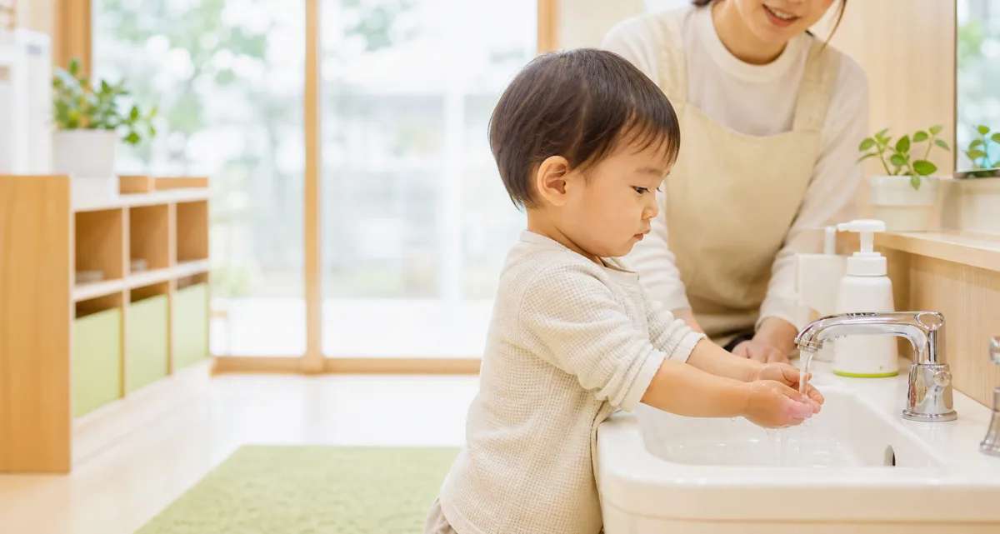
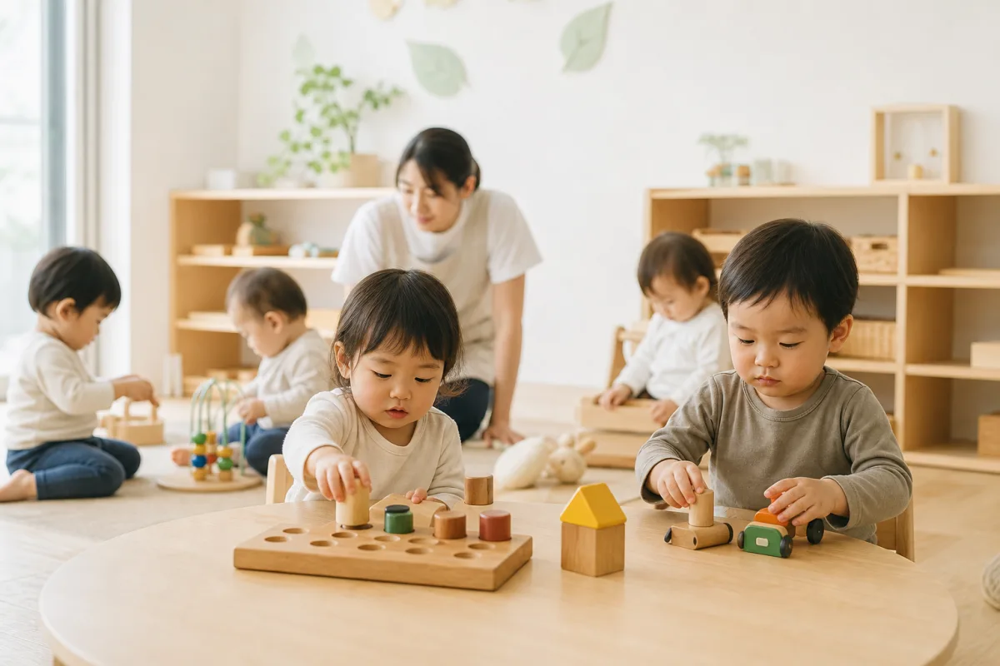
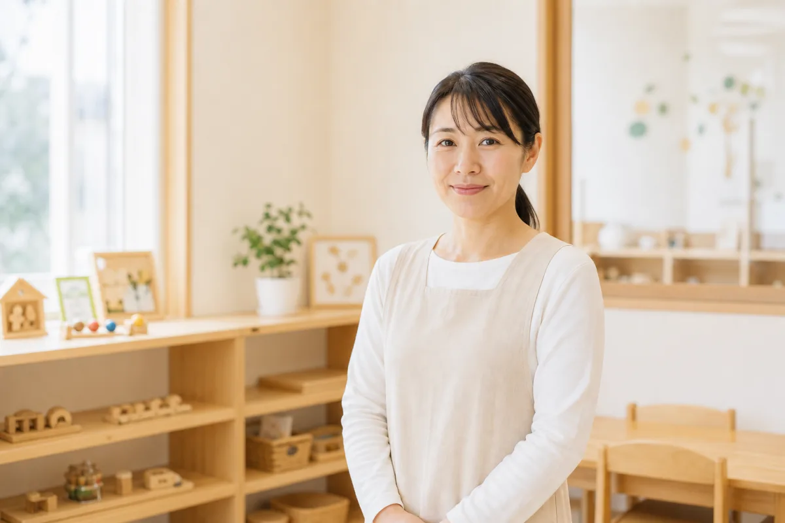

朝の身支度と手洗い
清潔・生活習慣鹿児島市の0〜2歳向け企業主導型保育園
はじめて預ける朝を、
少し軽くする。
0〜2歳の大切な時期に、子どもの安心と、働くご家庭の毎日を支える企業主導型保育園です。
子どもの日々の安心と、働くご家庭の朝の負担を支えます。
朝のしたくや体調のことも、毎日の中でゆっくり一緒に確認していけます。
午睡の見守り
体調共有
緊急時の流れ


Instagramで確認したい方へ
スマホで、園の空気と見守りを確認できるように。
写真のかわいさだけでなく、午睡前後の様子、手洗い、先生の声かけ、お迎え時の共有が伝わる発信を大切にします。見学前に「どんな毎日か」を少し想像できることが安心につながります。
あさのは保育園
@asanoha_hoikuen
午睡
給食
手洗い
先生
0〜2歳のあそびと生活
日中の過ごし方お迎え時の共有
家庭とのつながり
対象
0〜2歳の生活リズムに合わせた、落ち着いた保育環境。
安全
午睡・体調・登降園時の変化を、毎日の中で確認します。
相談
勤務先が未提携の場合や、地域枠の可能性も確認できます。
見学
見学だけでも大丈夫。気になることを短く聞けます。
お知らせ
園からのお知らせ
見学や入園に関するご案内を、少しずつ更新していきます。
- 見学についてのご相談を受け付けています
- 企業枠・地域枠についてのご案内
- 園での一日の流れを掲載しました
入園を検討中の方へ
園選びで気になることを、順番に見られるように。
安全への取り組み
「企業主導型でも大丈夫？」に、見学前から答えます。
大切なお子さまを預かる場所として、あさのは保育園では日々の見守り、体調の変化、緊急時の連絡を一つずつ確認できるようにしています。
見学で確認できる安心チェック
不安を「聞いて終わり」にせず、実際の流れで確認できます。
乳幼児の事故や体調変化が心配な方ほど、見学時に具体的な確認ポイントを見てください。分からないことは、その場で質問できます。
- 午睡姿勢・呼吸・確認間隔の考え方
- 体調登園時の機嫌、睡眠、食事、体温の共有
- 連携気になる様子の職員間共有と保護者連絡
- 緊急体調急変やけがの時の連絡先と判断の流れ
- 食事アレルギー、ミルク、離乳食の確認方法
職員配置、午睡確認、アレルギー対応、感染症時の登園目安など、詳細は見学時に資料や実際の環境を見ながらご確認ください。

我が家の利用枠を知りたい方へ
使える可能性を、見学前に一緒に確認できます。
勤務先の提携状況や地域枠、空き状況はご家庭によって異なります。制度の名前より先に、まずは「うちの場合はどうか」を確認できます。
勤務先でも使えるか知りたい
勤務先が共同利用の対象になるか、提携状況が分からない場合も含めて確認できます。
まだ提携していなくても相談できます
勤務先が未提携の場合も、まずは園へご相談ください。確認できる流れをご案内します。
地域枠の可能性を知りたい
お住まいの地域や空き状況によって、地域枠で相談できる場合があります。
空き状況や見学だけでも大丈夫
入園時期がまだ決まっていなくても、見学だけ、空き状況の確認だけでも大丈夫です。
利用枠や空き状況は時期・契約内容によって異なります。詳しくは見学時またはお問い合わせ時にご確認ください。
次にすること
具体的には、まずこれだけで大丈夫です
お問い合わせ時点で、すべてが決まっていなくても大丈夫です。分かる範囲のことだけお知らせください。
預けたあとの安心
預けたあとの毎日が、少し想像できるように。
朝の様子を、短く確認
登園時の機嫌や睡眠、食事のことを、無理のない範囲で一緒に確認します。
体調や機嫌を見守る
手洗いや身支度など毎日の生活の中で、小さな変化にも気づけるように見守ります。
0〜2歳のリズムに合わせて
あそび、食事、午睡の流れを、その日の様子に合わせてゆっくり整えていきます。
その日の様子を共有
園での過ごし方や気になったことを、家庭につながる言葉でお伝えします。
鹿児島市での送迎・見学
復職前後の朝を、少し現実的に考えられるように。
見学では、園内だけでなく、登園時の受け入れ、荷物、駐車場や送迎の流れも確認できます。
駐車場・乗降の流れ
鹿児島市内で車送迎を考えているご家庭に向けて、駐車場や朝の受け入れ場所を見学時に確認できます。
まだ時期が未定でも相談
育休復帰の時期が確定していなくても、見学だけ、空き状況の確認だけでも大丈夫です。
荷物や登園準備を確認
持ち物、連絡方法、体調共有など、朝に慌てやすいことを事前に確認できます。
よくある質問
企業主導型だからこそ、見学で確認してほしいこと。
企業主導型保育園でも、0〜2歳を安心して預けられますか？
園ごとに保育内容や体制は異なります。あさのは保育園では、午睡中の見守り、登園時の体調確認、保護者への共有方法を見学時に具体的に確認していただけます。
死亡事故や午睡中の事故が心配です。
不安に思うのは自然なことです。午睡時の確認方法、職員間の共有、緊急時の連絡の流れは、入園前に必ず確認できるようにしています。
勤務先が提携しているか分かりません。
分からない場合もご相談ください。勤務先名や利用希望時期をもとに、確認できる流れをご案内します。
見学では何を確認すればいいですか？
保育室の雰囲気、先生の声かけ、午睡の見守り、体調不良時の連絡、駐車場や送迎の流れを確認するのがおすすめです。
Contact
見学・空き状況のご相談
見学だけでも大丈夫です。空き状況や利用できる枠について、分かる範囲でお気軽にご相談ください。
まだ利用時期が決まっていない場合や、勤務先が提携しているか分からない場合もご相談いただけます。